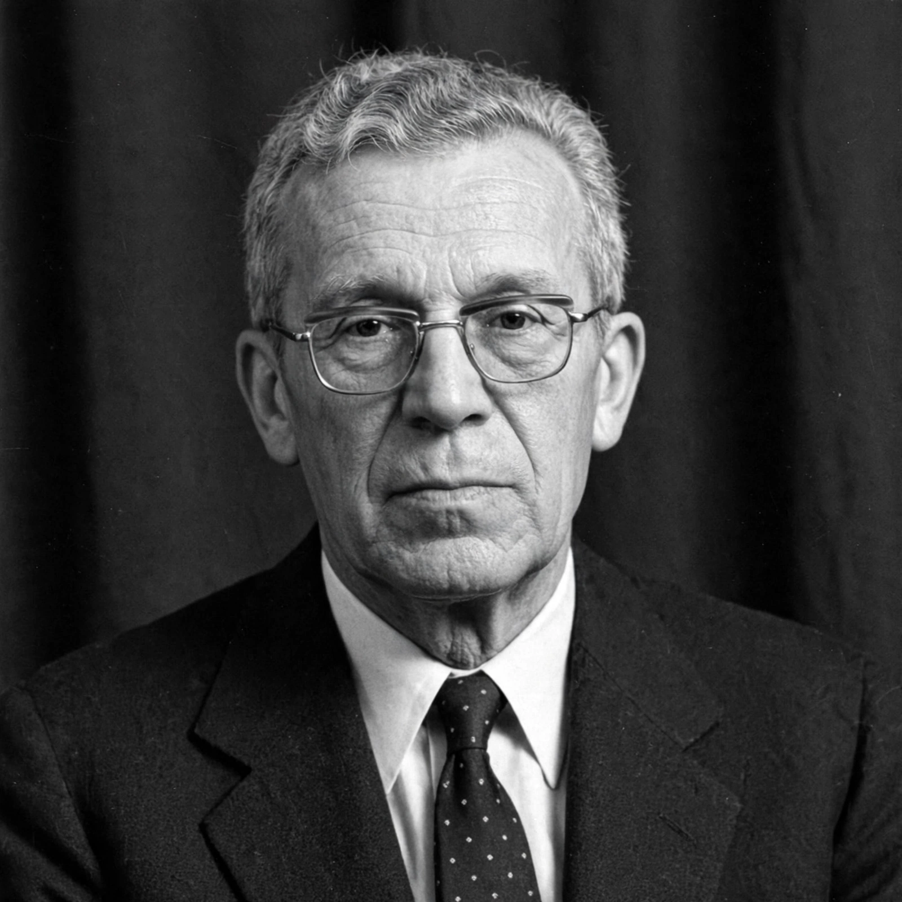

| Andrey Kolmogorov | |
|---|---|
| Born | 25 April 1903, Tambov, Russian Empire |
| Died | 20 October 1987 (aged 84), Moscow, Soviet Union |
| Nationality | Soviet (Russian) |
| Fields | Probability theory, topology, turbulence, algorithmic complexity, classical mechanics |
| Institution | Moscow State University |
| Awards | Wolf Prize (1980), Lobachevsky Prize, Stalin Prize |
Andrey Nikolaevich Kolmogorov (25 April 1903 – 20 October 1987) was a Soviet mathematician who made fundamental contributions to probability theory, topology, intuitionistic logic, turbulence, information theory, and the theory of dynamical systems. He is regarded as one of the greatest mathematicians of the twentieth century.
Kolmogorov was born in Tambov and raised in Tunoshna by his mother's sisters after his mother died in childbirth. He studied at Moscow State University, where as a student he produced striking early results, including a Fourier series that diverges almost everywhere, which brought him international attention while he was still a teenager.
In 1933 Kolmogorov published Foundations of the Theory of Probability, which placed probability on a rigorous axiomatic basis using measure theory; his system of axioms remains standard today. With Pavel Alexandrov he was a founder of the Moscow school of topology. In fluid dynamics he developed the statistical theory of turbulence, including the famous K41 scaling law and the spectrum of energy dissipation. He made landmark contributions to the theory of stochastic processes (Kolmogorov equations, the Kolmogorov extension theorem), to classical mechanics (the KAM theory, with Arnold and Moser), and — independently of Solomonoff and Chaitin — to algorithmic information theory: Kolmogorov complexity measures the length of the shortest program that produces a given object. His students include many of the leading Soviet mathematicians of the next generation.
Kolmogorov devoted great energy to mathematical education, founding a boarding school for gifted students at Moscow State University and reforming school curricula. He received the Wolf Prize in Mathematics in 1980 and died in Moscow in 1987.
See also: Probability theory, Kolmogorov complexity, Turbulence